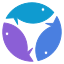
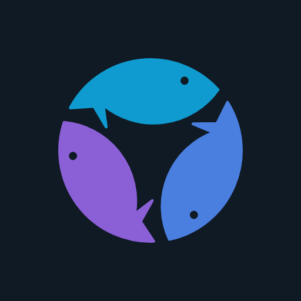
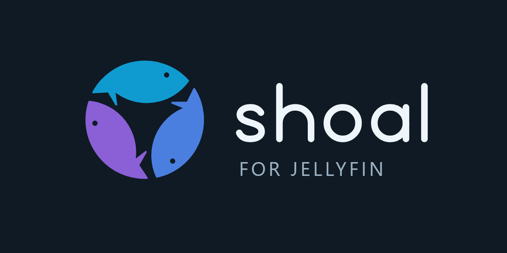

The Converge mark: three fish, one circle. The mark is transparent and uses mid-tone colors that hold at least 3:1 on both white and Jellyfin's dark background, so one file serves both themes. The lockup carries its own navy tile.
Dark theme

16 pxLight theme

